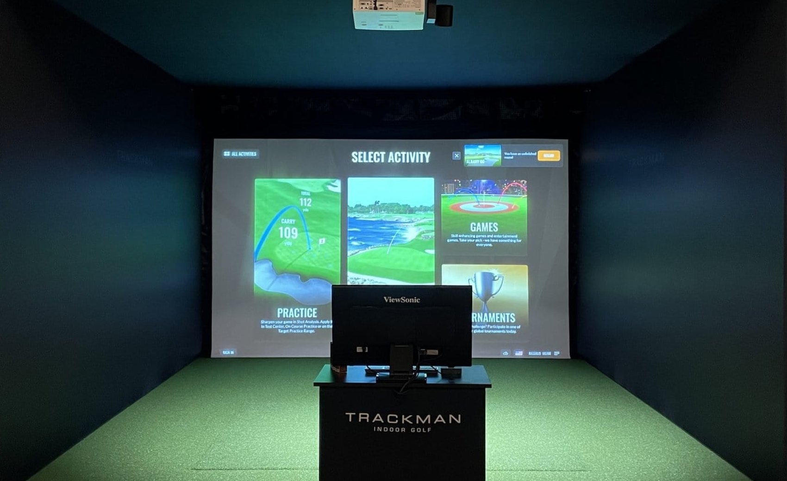
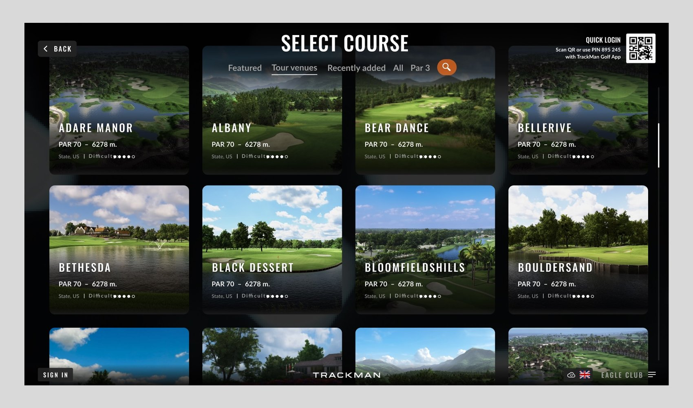
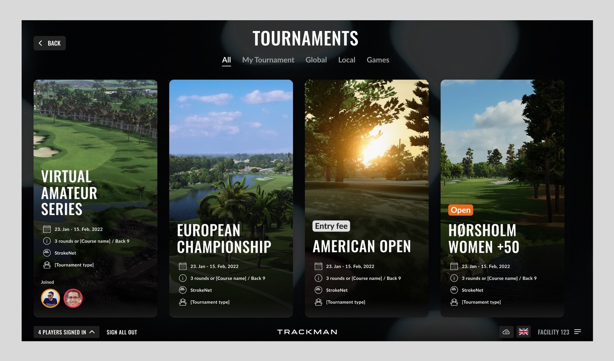
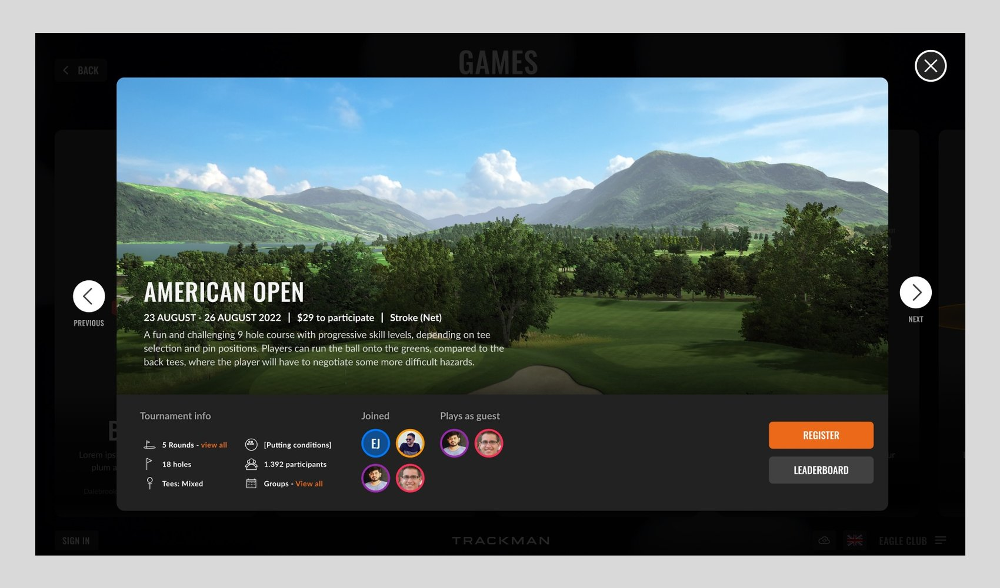

TrackMan.
At the virtual golf company TrackMan, I designed user experiences and user interfaces in close collaboration with POs on golf products such as Virtual Indoor Golf, Golf Range Games, and the Consumer App.
Senior Product Designer, April 2021 to December 2021.
The setting
TrackMan’s simulators stand all over the world, in shopping malls and private residences. The interface shows on the screen people are about to play on, driven from a computer next to it in the room.

The interface
One of the biggest projects I was part of launching was the new interface design for the simulator, the first point of contact people have with the product before playing. Choosing a course, browsing tournaments, joining one: the screens people meet before the round.



